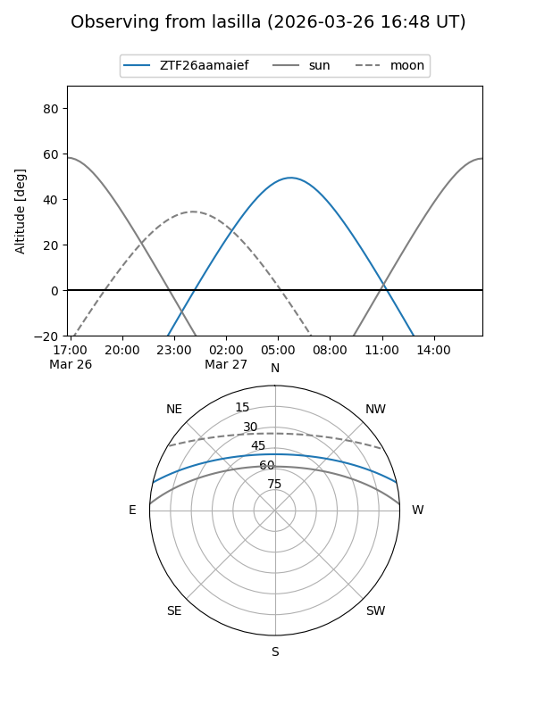
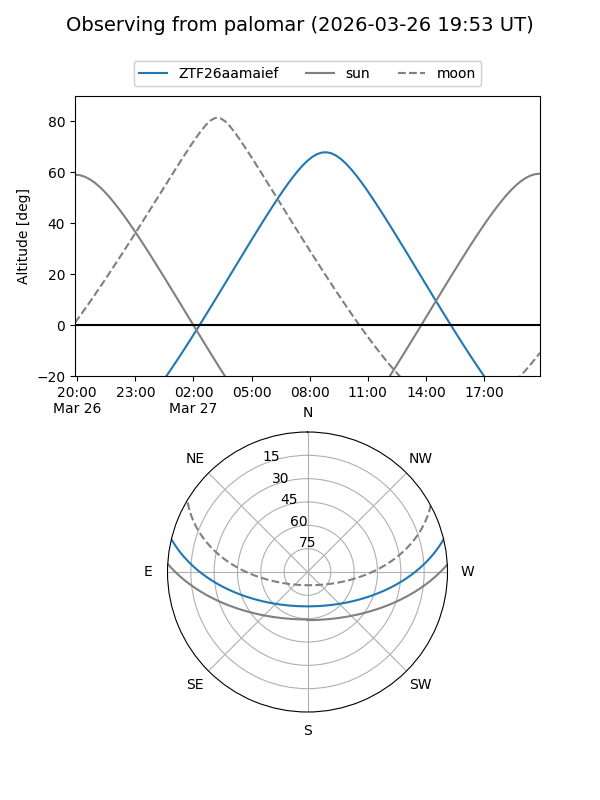

ZTF26aamaief
Target ZTF26aamaief at 2026-03-27 10:53
Aliases and brokers:
FINK: link
Lasair: link
ALeRCE: link
alt names
ZTF26aamaief (ztf,fink_ztf)
Coordinates:
equatorial (ra, dec) = 199.6071,+11.40938
equatorial (HMS+DMS) = 13:18:25.71,+11:24:33.78
galactic (l, b) = (326.2017,+73.05003)
Flags:
Photometry:
last ztfg=18.29
2 ztfg detections
Lightcurve
Visibility


Additional plots